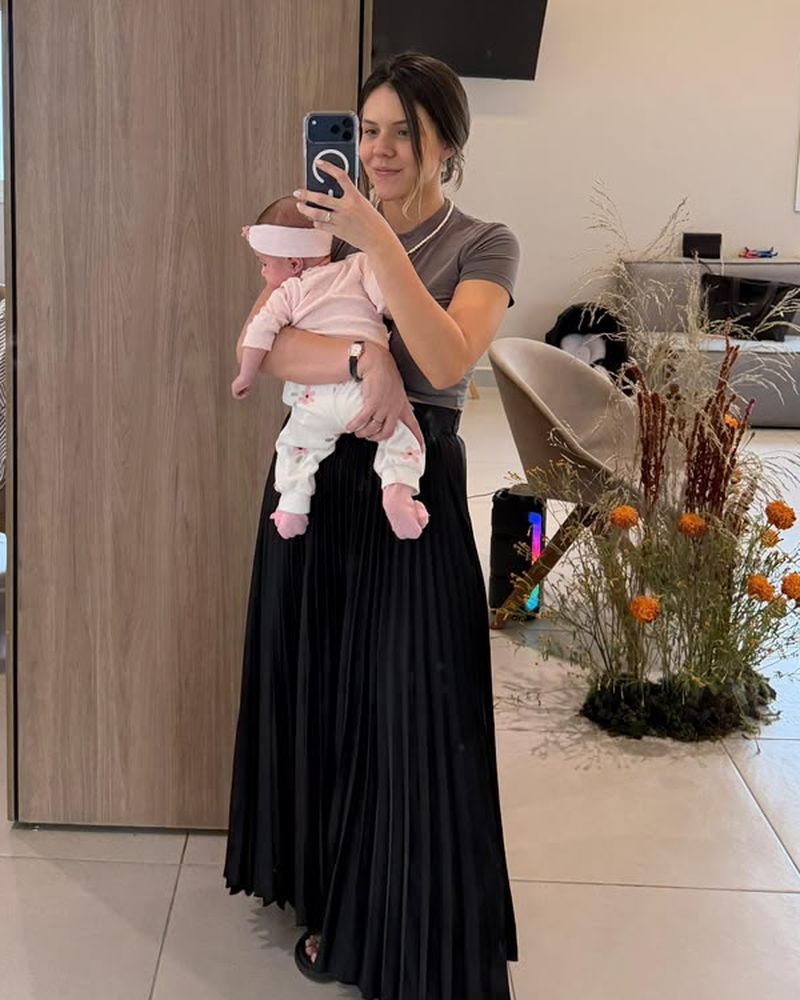
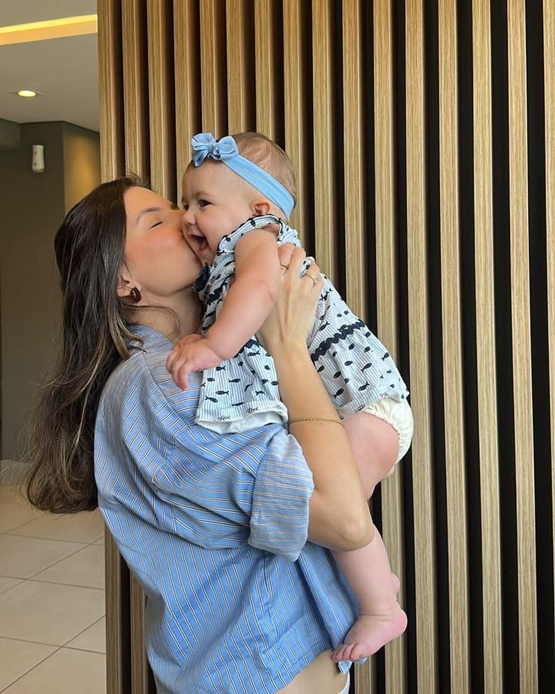
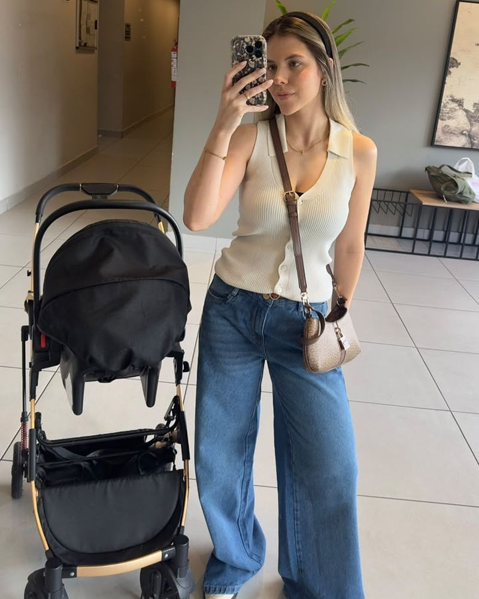

Bem nutrida na gestação. Inteira no pós-parto.
Acompanhamento nutricional da Bea Paes para grávidas e mães recentes, com doula e obstetra parceiras. Você ganha o peso certo para a sua fase, come o que você e o bebê precisam e recupera o seu corpo no seu tempo.
Beatriz Paes, nutricionistaAlimentação prática, fé e simplicidade
Semana 20 2º trimestre
A fome aumenta e o bebê cresce rápido. O seu ganho de peso é acompanhado mês a mês na curva da Caderneta da Gestante, com ferro, cálcio e proteína no prato.
O que costuma preocupar na gestação
- “Tenho medo de ganhar peso demais.”
-
Ganhar peso na gestação é esperado. O que importa é o ritmo. A Bea acompanha o seu ganho em cada consulta pela curva da Caderneta da Gestante e ajusta o plano antes que ele saia da faixa.
Calcular a faixa de ganho de peso - “Será que estou comendo o que o bebê precisa?”
-
O plano é montado a partir dos seus exames, da sua rotina e do que você gosta de comer. Ácido fólico, ferro, cálcio e proteína no lugar certo, sem dieta restritiva e sem “comer por dois”.
Ler o guia de alimentação - “Vou demorar para recuperar o meu corpo.”
-
A recuperação começa na gestação: quem ganha o peso dentro da faixa tem menos para perder depois. No pós-parto, a perda de peso é gradual e respeita a amamentação.
Ler o guia do pós-parto
A Bea já esteve do seu lado da história
Antes de acompanhar outras mães, ela viveu cada fase deste programa na própria pele: o positivo, a gestação, o parto e o pós-parto da filha. Tudo com o mesmo método que ensina.
-
Foto do teste positivo
O positivo
A nutricionista virou paciente do próprio método
O teste deu positivo e, junto com a alegria, começou o cuidado: o que comer, quanto ganhar de peso e como preparar o corpo para o que vinha pela frente.
-
Foto da gestação
A gestação
Comida de verdade, movimento e fé
Prato colorido, água sempre por perto, treino com orientação e amigas orando pela chegada da filha. Sem dieta radical e sem neura: alimentação prática, fé e simplicidade, do jeito que ela ensina.
-
O parto
O dia em que a filha chegou
Trabalho de parto com apoio ao lado, bola, respiração e muita entrega. E, no fim, a filha no colo.
-

As primeiras semanas
Pouco sono, muito colo
Amamentação, noites curtas e quase nenhum tempo para cozinhar. É aqui que a alimentação prática faz diferença: refeições simples, energia para o dia e nada de dieta restritiva.
-

Meses depois
Um passo de cada vez
Sem pressa e sem extremismos. O corpo volta no tempo dele, com comida de verdade e hábitos que cabem na rotina com um bebê.
-

Hoje
A mesma rotina corrida, agora com carrinho
Mãe, nutricionista e de volta ao próprio corpo. A prova de que o método funciona é ela mesma.
Agora é a sua vez
A Bea sabe o que é estar do seu lado da história. Por isso criou um acompanhamento que vai do positivo ao pós-parto, com doula e obstetra parceiras.
Beatriz Paes é nutricionista e trabalha com alimentação prática, fé e simplicidade. Ela ajuda você a construir e desconstruir hábitos para ter resultados, com atendimento humanizado e personalizado.
O que as diretrizes dizem
O acompanhamento segue as recomendações do Ministério da Saúde e as evidências mais recentes. Alguns números que guiam o trabalho:
-
8 a 12 kg
é o ganho total recomendado para quem começa a gestação com peso adequado. Para quem começa acima do peso, a faixa é menor.
Caderneta da Gestante, Ministério da Saúde, 2022
-
1.000 mg
de cálcio por dia a partir da 12ª semana é a nova recomendação para todas as gestantes, para prevenir a pré-eclâmpsia.
Nota Técnica 251/2024, Ministério da Saúde
-
25%
menos chance de cesárea quando a mulher tem apoio contínuo durante o trabalho de parto, como o de uma doula.
Revisão Cochrane sobre apoio contínuo no parto, 2017
Começa na gestação e continua depois do parto
Na gestação
- Plano alimentar ajustado a cada trimestre
- Ganho de peso acompanhado na curva da Caderneta
- Estratégias para enjoo, azia e prisão de ventre
- Preparação para o parto com a doula
No pós-parto
- Alimentação para a amamentação
- Energia para os primeiros meses com o bebê
- Perda de peso gradual, sem dieta restritiva
- Nutrição para hipertrofia quando o corpo estiver pronto
- Bea Paes, nutricionista
- Doula parceira
- Obstetra parceira
Guias para ler com calma
Conteúdo com base nas diretrizes oficiais, com as fontes no fim de cada página.
Quem já foi acompanhada pela Bea
Depoimento de uma paciente, com as palavras dela e autorização para publicar.
Depoimento de uma paciente, com as palavras dela e autorização para publicar.
Depoimento de uma paciente, com as palavras dela e autorização para publicar.
O que está incluso
- Acompanhamento nutricional em todas as fases
- Plano alimentar ajustado a cada trimestre e ao pós-parto
- Contato direto com a Bea
- Doula parceira
- Plano alinhado com o seu obstetra
Conte para a Bea em que fase você está
Responda algumas perguntas rápidas e mande a mensagem pronta. Ela responde com os próximos passos.